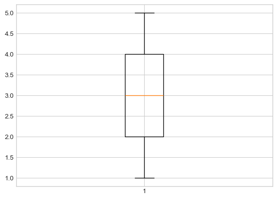
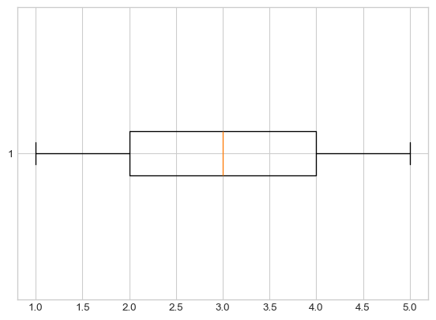
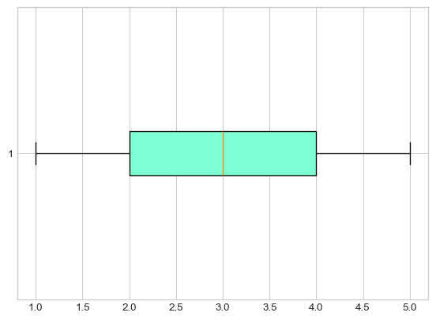
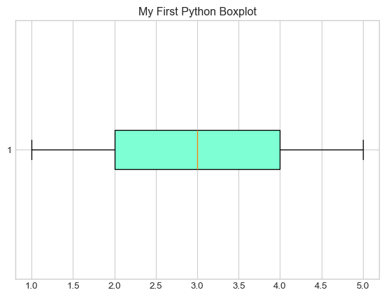
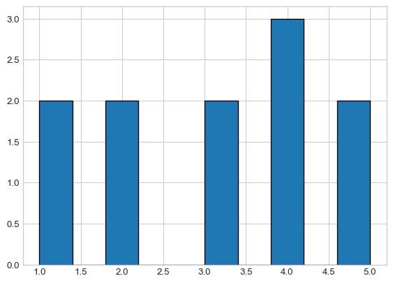
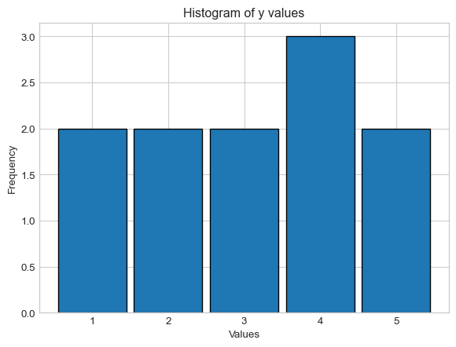
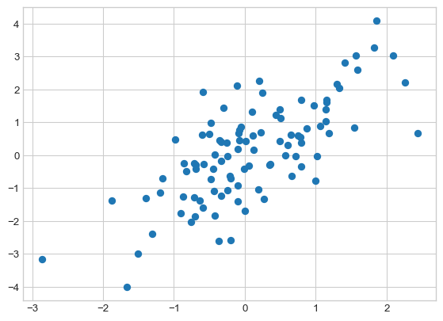
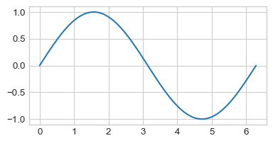
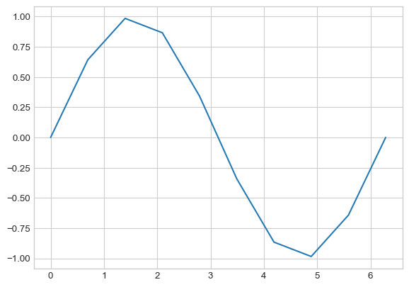
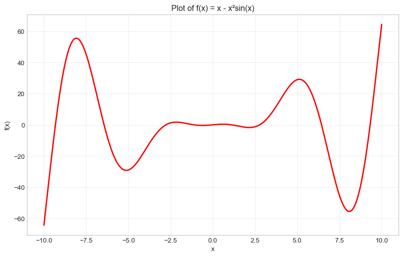

from <module name> import *Lab 3: Descriptive Statistics
PSTAT 5A - Summer Session A 2025

It’s finally time for us to revisit our notions of descriptive statistics (from Week 1 of the course), now in the context of Python!
Modules, Revisited
⏱️ Estimated time: 5 minutes
Before we talk about plotting, we will need to quickly talk about modules again. Recall from Lab1 that modules are Python files containing definitions for functions and classes. Up until now, we’ve been importing all functions and classes from a module using the command
There is another way to import modules, which is the following:
import <module name> as <abbreviation>For example,
import numpy as npnot only imports the numpy module but imports it with the abbreviation (i.e. nickname) np so that we can simply write np in place of numpyevery time.
For example, to compute the mean of a list of numbers 1,2,3, we can simply call the numpy mean function np.mean().
Here, we first create a generic list and call it a. We use the function np.array() to create an array of our chosen numbers. Then, we can use the function np.mean() to compute the mean of array we created.
Each time, we call a function from the numpy module we use np as shown below:
a = np.array([1, 2, 3])
print(np.mean(a)) 2.0The reason this is particularly useful is because module names can sometimes be quite long, so being able to refer to the module with a shortened nickname will save a lot of time!
In general, if we import a module using
import <module name> as <abbreviation>we reference functions from <module name> using the syntax
<abbreviation>.<function name>()For example, after having imported the numpy module with the short name np, we access the sin() function contained in the numpy module by calling
np.sin()Task 1
⏱️ Estimated time: 3 minutes
Import the
numpymodule asnp, and check thatnp.sin(0)returns a value of 0.Import the
datasciencemodule asds, and check that
ds.Table().with_columns(
"Col1", [1, 2, 3],
"Col2", [2, 3, 4]
)prints correctly as :
/Users/narjesmathlouthi/miniconda3/envs/pstat5a/lib/python3.11/site-packages/datascience/maps.py:13: UserWarning:
pkg_resources is deprecated as an API. See https://setuptools.pypa.io/en/latest/pkg_resources.html. The pkg_resources package is slated for removal as early as 2025-11-30. Refrain from using this package or pin to Setuptools<81.
| Col1 | Col2 |
|---|---|
| 1 | 2 |
| 2 | 3 |
| 3 | 4 |
Important
If you import a module with an abbreviation <abbreviation>, you must always use the abbreviation when referencing the module; not the original module name. For example, after importing numpy as np, running numpy.sin() would return an error.
#Your code hereNumerical Summaries
Measures of Central Tendency
⏱️ Estimated time: 5 minutes
Recall that for a list of numbers (\(x_1,x_2,\ldots, x_n\)), \(X = \{ x_i\}_{i=1}^{n}\), the mean is defined as
\(\bar x= \frac{1}{n} \sum_{i=1}^{n} x_i\)
Computing the mean of a list or array of numbers in Python is relatively simple, using the np.mean() function [recall that we imported the numpy module with the abbreviation np, meaning np.mean() is a shorthand for numpy.mean()]. Similarly, to compute the median of a list or array we can use np.median().
Understanding Functions and Parameters
Before we dive into examples, let’s understand what functions are and how they work with parameters. A function is a block of code that performs a specific task. Functions can take parameters (also called arguments) as input, process them, and return a result.
The general syntax for calling a function is:
function_name(parameter1, parameter2, ...)For statistical functions like np.mean() and np.median(), the main parameter is the data (list or array) you want to analyze. You can read more about about each function in the official documentation for the numpy module.
Here are some examples:
Example with np.mean():
# Create a simple list of numbers
numbers = [2, 4, 6, 8, 10]
# Calculate the mean - the function takes 'numbers' as a parameter
average = np.mean(numbers)
print(f"The mean is: {average}") # Output: The mean is: 6.0The mean is: 6.0Example with np.median():
# Using the same list
numbers = [2, 4, 6, 8, 10]
# Calculate the median - the function takes 'numbers' as a parameter
middle_value = np.median(numbers)
print(f"The median is: {middle_value}") # Output: The median is: 6.0
# Try with an odd number of elements
odd_numbers = [1, 3, 5, 7, 9, 11, 13]
median_odd = np.median(odd_numbers)
print(f"The median of odd list is: {median_odd}") # Output: The median of odd list is: 7.0The median is: 6.0
The median of odd list is: 7.0Another example with different data:
# Example with decimal numbers
grades = [85.5, 92.0, 78.5, 96.0, 88.5, 91.0]
mean_grade = np.mean(grades)
median_grade = np.median(grades)
print(f"Mean grade: {mean_grade:.2f}") # Output: Mean grade: 88.58
print(f"Median grade: {median_grade:.2f}") # Output: Median grade: 89.75Mean grade: 88.58
Median grade: 89.75
Note
Notice how the functions take our data as a parameter (the input inside the parentheses) and return a calculated value that we can store in a variable or use directly.
Task 2
⏱️ Estimated time: 3 minutes
Let x_list be a list containing the elements 1, 2, and 3, and let x_array be an array containing the elements 1, 2, and 3. Compute the mean and median of x_list and x_array using the appropriate functions from the numpy module.
#Your code hereMeasures of Spread
⏱️ Estimated time: 5 minutes
Recall that we also discussed several measures of spread including:
Standard deviation
IQR (Interquartile Range)
Range
Sure enough, the numpy module contains several functions which help us compute these measures. Let’s examine each separately.
Task 3
⏱️ Estimated time: 4 minutes
Look up the documentation of the function np.ptp(), and describe what it does. Also, answer the question: Q: what does ptp actually stand for?
Now, apply the np.ptp() function on your x_list and x_array variables from Task 1 above and check that it functions like you expect.
# Your answer here
#Your code hereNext, we tackle a slightly peculiar function: np.std(). We expect this to compute the standard deviation of a list/array, but…
Task 4
⏱️ Estimated time: 6 minutes
Compute the standard deviation \(s\) of the x_list variable from Task 1 by hand, and write down the answer using a comment or Markdown cell.
Now, run np.std(x_list). Does this answer agree with what you found in part (a) above?
Now, recompute the standard deviation \(s\) of x_list by hand but this time use n instead of n−1 in the formula. How does this answer compare with the result of np.std(x_list)?
#Your code hereThe result of the previous Task is the following: given a list x = [$x_1, x_2, ..., x_n$], running np.std(x) actually computes the population standard deviation \(\sigma\).
\[ \sigma = \sqrt{\frac{1}{N} \sum_{i=1}^{n}(x_i- \bar x)^2} \]
as opposed to the sample standard deviation
\[ s = \sqrt{\frac{1}{n-1} \sum_{i=1}^{n}(x_i- \bar x)^2} \]
As we have mentioned above, functions take on parameters (or arguments). Some parameters are required while others are optional and left to the user to specify. When using np.std(), the function takes on the following params:
numpy.std(a, axis=None, dtype=None, out=None, ddof=0, keepdims=<no value>, *, where=<no value>, mean=<no value>, correction=<no value>)
where,
ddof{int, float}, is an optional parameter that takes integers and floats. It represents the Means Delta Degrees of Freedom. The divisor used in calculations is N - ddof, where N represents the number of elements. By default ddof is zero.
Task 4 (cont’d)
⏱️ Estimated time: 2 minutes
Run np.std(x_list, ddof = 1) and check whether this matches the result of part (a) above.
Note
To compute the standard deviation of a list x, we run np.std(x, ddof = 1) when working with sampled data unless otherwise specified that your source of data is representative of the population.
# Your code hereFinally, we turn to the Interquartile Range (IQR): to compute the IQR of a list/array \(x\), we use (after importing numpy as np)
np.diff(np.percentile(x, [25,75]))[0]Optional Task: Creating Your Own IQR Function
⏱️ Estimated time: 3 minutes
Now that you understand how to use functions and their parameters, let’s create our own custom function to calculate the IQR! This will help you understand how to define your own functions in Python.
1. Understanding Function Definition Syntax
To create a function in Python, we use the def keyword followed by the function name and parameters:
def function_name(parameter1, parameter2):
# Code that does something with the parameters
result = some_calculation
return result # Give back the calculated value2. Create the IQR Function
Let’s create a function called calculate_iqr that takes a list or array as input and returns the IQR:
def calculate_iqr(data):
"""
Calculate the Interquartile Range (IQR) of a dataset.
Parameter:
data - a list or array of numbers
Returns:
The IQR value (Q3 - Q1)
"""
# Calculate the IQR using the numpy method we learned
iqr_value = np.diff(np.percentile(data, [25, 75]))[0]
return iqr_value3. Test Your Function
Now let’s test our custom function with some example data:
# Create some test data
# Example - test_scores = [72, 85, 90, 78, 92, 88, 76, 94, 82, 89, 91, 77]
# Create your data
test_scores = [ ]
# Use our custom function
my_iqr = calculate_iqr( ) # Call the function created above here
print(f"IQR using our function: {my_iqr}")
# Compare with the direct method
direct_iqr = np.diff(np.percentile(test_scores, [25, 75]))[0]
print(f"IQR using direct method: {direct_iqr}")
# They should be the same!# Your code hereVisualizations
⏱️ Estimated time: 3 minutes
It’s finally time to make pretty plots! The module we will use to generate visualizations is the matplotlib module (though there are quite a few other modules that work for visualizations as well). The official website for matplotlib can be found at https://matplotlib.org/.
Before we generate any plots, we will need to run the following code once:
%matplotlib inline
import matplotlib
import matplotlib.pyplot as plt
plt.style.use('seaborn-v0_8-whitegrid')Here’s what these lines of code are doing:
%matplotlibinline tells Jupyter to display our plots directly underneath our code. It removes the need to useplt.show().import matplotlibimports thematplotlibmoduleimport matplotlib.pyplot as pltimports thepyplotsubmodule (a submodule is just a module contained within another larger module) with the abbreviationplt.plt.style.use('seaborn-v0_8-whitegrid')tells Jupyter to use a specific theme (calledseaborn-v0_8-whitegrid) when generating plots.
Note
Again, notice the beauty of the import <module> as <abbreviation> syntax.
- after running the third line above, we no longer need to write
matplotlib.pyplotin our code, we just usepltto call the module!
Also, there are lots of other themes you can use when generating your plots: after completing this lab, I encourage you to consult this reference guide for a list of a few other pyplot themes.
Boxplots and Histograms
Now, let’s proceed on to make some plots. The first two types of plots we will look at are the two we used to describe numerical data: namely, boxplots and histograms.
The functions we will use are the plt.boxplot() and plt.hist() functions, respectively.
Task 5
⏱️ Estimated time: 6 minutes
Make a list called
ythat contains the following elements:[1, 2, 3, 4, 5, 4, 3, 5, 4, 1, 2].Run
plt.boxplot(y);(be sure to include the semicolon!). Your plot should look like a basic vertical boxplot.

Let’s make our boxplot horizontal, as opposed to vertical.
Tip
Recall, that functions take on parameters (or arguments). For detailed list or arguments that can be passed on to plt.boxplot, consult the function documentationmatplotlib.pyplot.boxplot().
For plt.boxplot(), there is an optional param called orientation. It accepts the values “vertical” or “horizental” with ” vertical” being the default.
To use in your pyton code, you can simply add , after your data and add orientation =' ' . Inside " " specify the desired direction and close the parenthesis.

Next, let’s add some color to our plot. Within your call to plt.boxplot(), after your data and orientation param, add a semicolon , to seperate the parameters and add the following: patch_artist=True, boxprops = dict(facecolor = "aquamarine") . Your boxplot should look like this:

What do these parameters do?
patch_artist=True: This parameter tells matplotlib to draw the boxplot elements (like the box itself) as “patch” objects, which can be filled with colors. By default, boxplots are drawn as simple lines without fill capability. Setting this toTrueenables us to add colors and other visual effects to the box.boxprops = dict(facecolor = "aquamarine"): This parameter controls the properties of the box (the rectangle part of the boxplot). Thedict()creates a dictionary of properties we want to set:
facecolor specifies the fill color inside the box “aquamarine” is the color name (you could use other colors like “lightblue”, “pink”, “yellow”, etc.)
Think of it like this: patch_artist=True gives us a “paintable” box, and boxprops = dict(facecolor = "aquamarine") tells Python “paint the inside of that box aquamarine color!”
Try experimenting: after completing this task, try changing “aquamarine” to “lightcoral” or “lightsteelblue” to see different colors!
Finally, let’s add a Title! Right below your call to plt.boxplot(), add the following:
plt.title("My First Python Boxplot");(again, don’t forget the semicolons).

- Based on the boxplot we just generated, what is the IQR of y? Write your answer in a Markdown cell. Then, use the syntax discussed in the previous section of this Lab to use Python to compute the
IQRofy, and comment on the result.
# Your code here
# Your answer hereOf course, boxplots are not the only way to summarize numerical variables: we also have histograms!
Task 6
⏱️ Estimated time: 5 minutes
Call the plt.hist() function on the y list defined in Task 5, and use the function documentation to add arguments to your call to plt.hist() function to generate a histogram with appropriate number of bins. Add a label for the x-axis plt.xlabel('Values'), a label for the y-axis plt.ylabel('Frequency') and a title using plt.title('Histogram of y values').
For example, to create a basic histogram using plt.hist(), you would use the following:
# Basic histogram
plt.hist(y);
plt.show()
You can use explicit bin edges like
bins=[0.5, 1.5, 2.5, 3.5, 4.5, 5.5]to center your integer values.Alternatively, you could use
range=(0.5, 5.5)withbins=5.Use
rwidth=0.9to make bars 90% width (creates 10% spacing)Add edge colors with
edgecolor='black'for visual separation
Your histogram, will look like this!

Important
Pay attention to the number of bins! With 5 distinct values (1, 2, 3, 4, 5), we use 5 bins to clearly show the frequency of each value.
# You code hereScatterplots
We should also quickly discuss how to generate scatterplots in Python.
Task 7
⏱️ Estimated time: 4 minutes
- Copy-paste the following code into a code cell, and then run that cell (don’t worry about what this code is doing- we’ll discuss that in a future lab).
np.random.seed(5)
x1 = np.random.normal(0, 1, 100)
x2 = x1 + np.random.normal(0, 1, 100)
plt.scatter(x1, x2);
- Add an x-axis label that says “x1” and a y-axis label that says “x2”, along with the title “My First Python Scatterplot”.
# You code herePlotting a Function
⏱️ Estimated time: 4 minutes
Finally, I’d like to take a quick detour from descriptive statistics and talk about how to plot a function using Python. As a concrete example, let’s try and plot a sine curve from \(0\) to \(2 \pi\)
If you recall, in Lab1 we used the sin() function from the math module- it turns out that the numpy module (which, we have imported as np) also has a sin function, so let’s use that one today:
np.sin()Next, we create a set of finely-spaced points between our two desired endpoints (here, \(0\) to \(2 \pi\), respectively). We will do so using the np.linspace() function, which works as follows:
np.linspace(start, stop, num)creates a set of num evenly-spaced values between start and stop, respectively. For instance:
np.linspace(0,1,10)array([ 0. , 0.11111111, 0.22222222, 0.33333333, 0.44444444,
0.55555556, 0.66666667, 0.77777778, 0.88888889, 1. ])In the context of plotting, the more points we generate the smoother our plot will seem (you will see what this means in a minute). As such, let’s start with 150 points between \(0\) to \(2 \pi\):
x = np.linspace(0, 2 * np.pi, 150)Finally, we call the plt.plot() function on \(x\) and np.sin(x) to generate our plot:
plt.figure(figsize=(4.5, 2.25))
plt.plot(x, np.sin(x))
Let’s see what would have happened if we used fewer values in our np.linspace() call:
xnew = np.linspace(0, 2 * np.pi, 10)
plt.plot(xnew, np.sin(xnew))
So, the more points we include in our call to np.linspace(), the smoother our final function will look!
To summarize, here is the general “recipe” to plot a function f() between two values a and b in Python:
- Let
x = np.linspace(a, b, <some large value>) - Call
plt.plot(x, f(x)) - Add labels/titles as necessary
Task 8
⏱️ Estimated time: 4 minutes
Generate a plot of the function \(f(x)=x-x^2 \sin(x)\) between \(x=−10\) and \(x=10\).
Experiment around with the number of values generated using np.linspace(start, stop, num) to ensure your plot is relatively smooth.
Be sure to include axis labels; also, change the color of the graph to red. Your final plot should look something like this:

# Your code here
# Create x values using linspace for a smooth plot
x =
# Define the function
y =
# Create the plot with red color
plt.figure(figsize=(10, 6))
plt.plot( , , color= , linewidth=2) # add relevant params
plt.xlabel('' ) # add x-axis label
plt.ylabel( '') # add y-axis label
plt.title( '') # add title
plt.grid(True, alpha=0.3) # light grid for better readability
plt.show()This concludes lab 3!